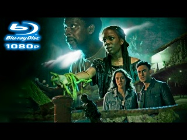
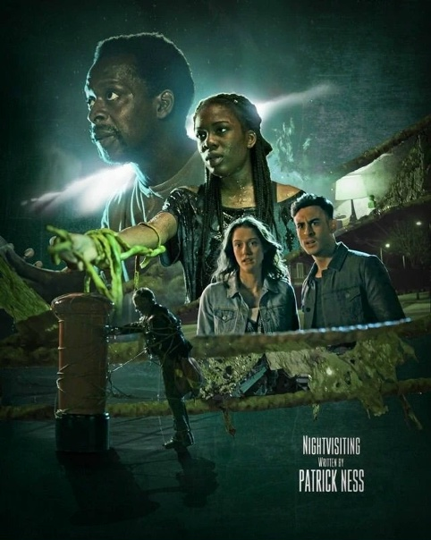

Весь 1-й сезон (8 серий)
 | Весь 1-й сезон (8 серий) |
Nightvisiting
Дата выхода: 29 октября 2016
Формат: 45-минутный эпизод
| Варианты озвучек: | * Разные: смотрите по инструкции |
|---|---|
| Скачивание и просмотр: |
Лондон опутывает жуткий пришелец со способностью превращаться в умерших близких.
Таня находит в своей комнате неожиданного гостя, восставшего из мёртвых - и не только она. Рам и мисс Квилл также предстоят неожиданные воссоединения.
Столкнувшись с эмоциональной дилеммой, команда должна одолеть убеждающего манипулятора, пробиваясь через опутанные улицы, пока Таня навечно не попала в забвение, а вместе с ней и всё человечество.
